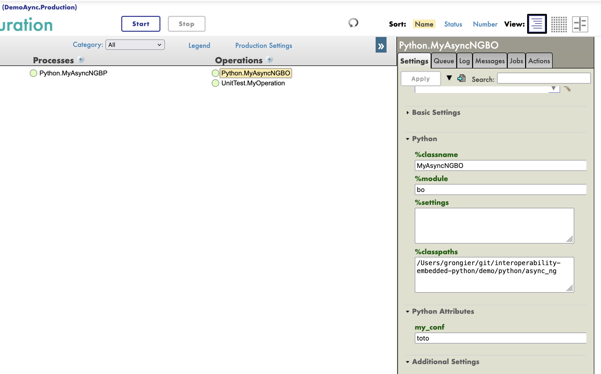
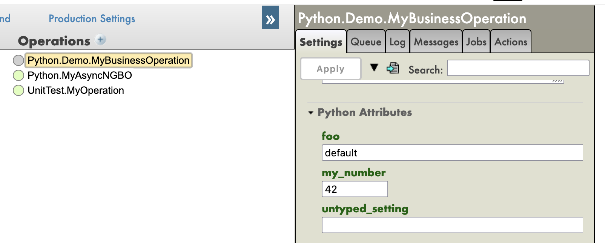

Settings in production
To pass production settings to your component, you have two options:
- Use the %settings parameter
- Create your custom settings
Context
In production when you select a component, you can configure it by passing settings.

Those settings can be passed to your python code.
IoP/IRIS applies production settings after allocating the Python component
instance with __new__(). Read settings in on_init() or later; custom
component __init__() methods are not called.
Use the %settings parameter
All the settings passed to %settings are available in string format into your class as a root attribute.
Each line of the %settings parameter is a key-value pair separated by a the equal sign.
Key will be the name of the attribute and value will be the value of the attribute.
For example, if you have the following settings:
foo=bar
my_number=42
You can access those settings in your class like this:
from iop import BusinessOperation
class MyBusinessOperation(BusinessOperation):
def on_init(self):
self.log_info("[Python] MyBusinessOperation:on_init() is called")
self.log_info("[Python] foo: " + self.foo)
self.log_info("[Python] my_number: " + self.my_number)
return
As %settings is a free text field, you can pass any settings you want.
Meaning you should verify if the attribute exists before using it.
from iop import BusinessOperation
class MyBusinessOperation(BusinessOperation):
def on_init(self):
self.log_info("[Python] MyBusinessOperation:on_init() is called")
if hasattr(self, 'foo'):
self.log_info("[Python] foo: " + self.foo)
if hasattr(self, 'my_number'):
self.log_info("[Python] my_number: " + self.my_number)
return
Create your custom settings
If you want to have a more structured way to pass settings, you can create your custom settings.
To create a custom settings, you create an attribute in your class.
This attribute must :
- have a default value.
- not start with an underscore.
- be untyped or have the following types:
str,int,float,bool.
Otherwise, it will not be available in the management portal.
from iop import BusinessOperation
class MyBusinessOperation(BusinessOperation):
# This setting will be available in the management portal
foo: str = "default"
my_number: int = 42
untyped_setting = None
# This setting will not be available in the management portal
_my_internal_setting: str = "default"
# no_available_setting # This line would cause a syntax error
def on_init(self):
self.log_info("[Python] MyBusinessOperation:on_init() is called")
self.log_info("[Python] foo: " + self.foo)
self.log_info("[Python] my_number: " + str(self.my_number))
return
They will be available in the management portal as the following:

If you overwrite the default value in the management portal, the new value will be passed to your class.
Component Settings
Public class attributes on a component are exposed as IRIS production settings. By default they stay in the generated Python Attributes group. Use setting(...) when you want to control how a setting appears in the IRIS production UI.
from iop import BusinessService, Category, controls, setting
class FileService(BusinessService):
InputDirectory = setting(
"/data/in",
category=Category.CONNECTION,
required=True,
description="Directory to scan",
control=controls.directory(),
)
Target = setting(
"",
category=Category.BASIC,
required=True,
control=controls.production_item(),
)
You can also keep normal Python defaults and attach metadata with typing.Annotated:
from typing import Annotated
from iop import BusinessService, Category, Setting, controls
class FramedService(BusinessService):
Framing: Annotated[
str,
Setting(
"None",
category=Category.CONNECTION,
control=controls.framing(),
),
]
Categories
Categories control where the setting appears in the IRIS production settings UI. They are written to the generated SETTINGS parameter as the setting section name. Categories do not change the Python attribute name, default value, IRIS data type, required flag, or editor control.
If category is omitted, the setting stays in the generated Python Attributes group. Use Category for common IRIS sections, or pass a string when a component needs its own section name.
from iop import Category, setting
Timeout = setting(30, category=Category.BASIC)
ArchiveDirectory = setting("/archive", category="Archiving")
| Category | Generated section | Behavior |
|---|---|---|
Category.INFO |
Info |
Groups informational settings. Use for values that identify or describe the component rather than tune runtime behavior. |
Category.BASIC |
Basic |
Groups the most common operational settings. Use for values a production operator is expected to review or change frequently. |
Category.CONNECTION |
Connection |
Groups endpoint, path, credential, protocol, adapter, and network-related settings. |
Category.ADDITIONAL |
Additional |
Groups optional or less frequently changed settings that should remain visible but not compete with the basic settings. |
Category.ALERTING |
Alerting |
Groups alert, notification, and error-reporting settings. |
Category.DEV |
Dev |
Groups development, debug, diagnostic, or troubleshooting settings. |
"Custom Name" |
Custom Name |
Creates or uses a custom section with that exact name. Use sparingly so production settings stay predictable. |
Control Helpers
Control helpers return the IRIS production setting editor context string used in the generated SETTINGS parameter. They do not validate the selected value in Python; they tell the IRIS Management Portal which picker or selector to show for the setting.
| Helper | Returns | Behavior |
|---|---|---|
controls.directory() |
directorySelector |
Shows the IRIS directory picker. Use for settings that should contain a directory path. |
controls.file() |
fileSelector |
Shows the IRIS file picker. Use for settings that should contain a file path. |
controls.production_item() |
selector?context={Ens.ContextSearch/ProductionItems?targets=1&productionName=@productionId} |
Shows production items from the current production and stores the selected item name. Use for target component settings such as TargetConfigName. |
controls.credentials() |
credentialsSelector |
Shows the credentials selector. Use for settings that reference an IRIS credentials entry. |
controls.rule() |
ruleSelector |
Shows the rule selector. Use for settings that reference an IRIS rule definition. |
controls.dtl() |
dtlSelector |
Shows the DTL selector. Use for settings that reference a data transformation. |
controls.schedule() |
scheduleSelector |
Shows the schedule selector. Use for settings that reference an IRIS schedule. |
controls.ssl_config() |
sslConfigSelector |
Shows the SSL/TLS configuration selector. Use for settings that reference an IRIS SSL configuration. |
controls.framing() |
selector?context={Ens.ContextSearch/getDisplayList?host=@currHostId&prop=Framing} |
Shows the display list for the Framing property of the current host. Use for adapter framing settings. |
controls.character_set() |
selector?context={Ens.ContextSearch/CharacterSets} |
Shows the IRIS character set selector. Use for charset or encoding settings. |
controls.local_interface() |
selector?context={Ens.ContextSearch/TCPLocalInterfaces} |
Shows configured TCP local interfaces. Use for settings that bind to a local network interface. |
controls.schema_category(host) |
selector?context={Ens.ContextSearch/SchemaCategories?host=<host>} |
Shows schema categories for the specified host. Pass a host expression such as @currHostId or a host setting value. |
controls.search_table(host) |
selector?context={Ens.ContextSearch/SearchTableClasses?host=<host>} |
Shows search table classes for the specified host. Pass a host expression such as @currHostId or a host setting value. |
controls.production_item() accepts optional arguments:
Target = setting(
"",
control=controls.production_item(
targets=True,
production_name="@productionId",
multi_select=False,
),
)
targets: passed to the IRISProductionItemscontext astargets=1ortargets=0.production_name: passed to the IRISProductionItemscontext asproductionName=....multi_select: whenTrue, addsmultiSelect=1to the selector.
controls.framing() accepts optional arguments:
Framing = setting(
"None",
control=controls.framing(host="@currHostId", prop="Framing"),
)
host: host expression passed toEns.ContextSearch/getDisplayList.prop: property name whose display list should be used.
For advanced IRIS controls, pass the raw editor context string:
from iop import controls, setting
Framing = setting(
"None",
control=controls.raw(
"selector?context={Ens.ContextSearch/getDisplayList?host=@currHostId&prop=Framing}"
),
)